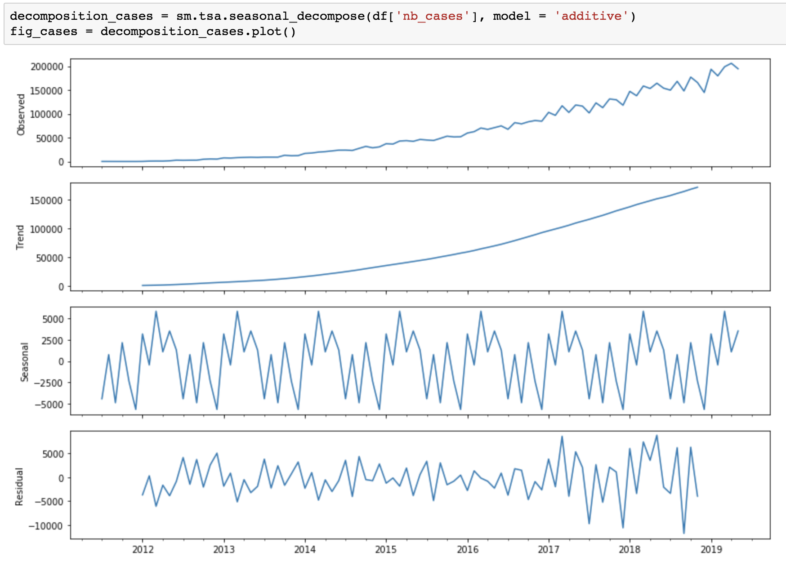
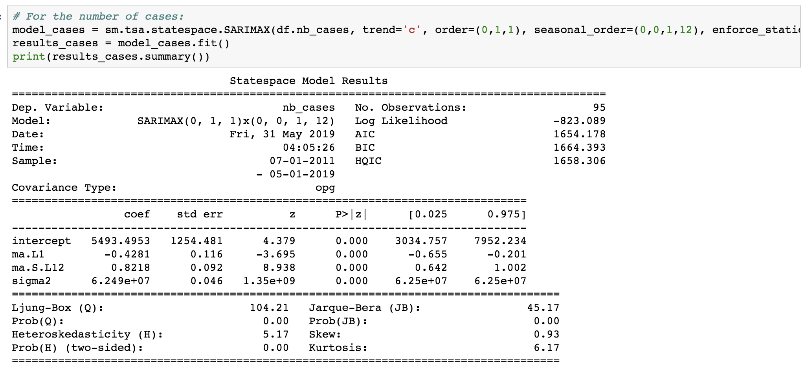
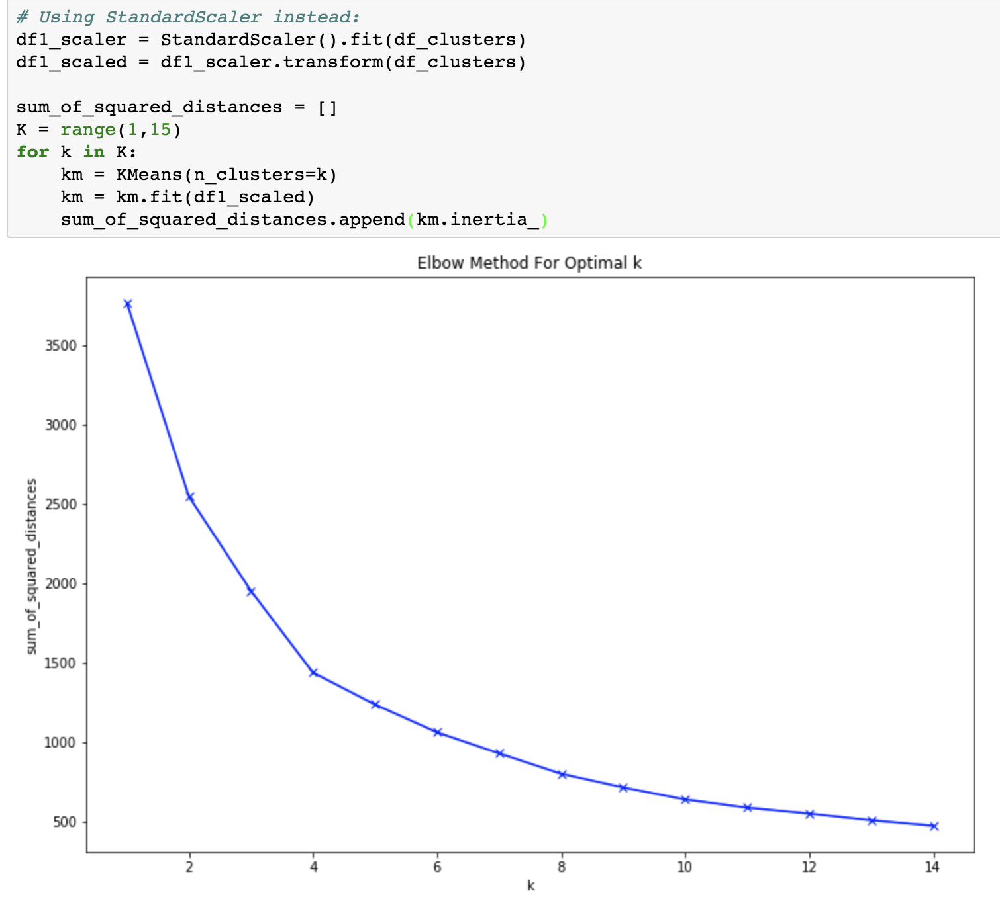
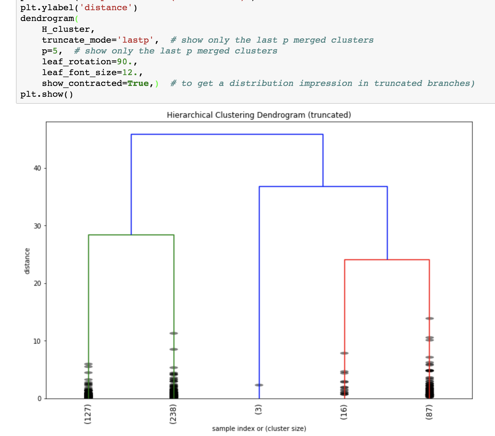

Small LA-based company offering cloud-based software to dental labs, on a subscription basis
Tremendous growth since the beginnings in 2011
488 databases (one per subscriber) and a few administrative databases were made accessible on a MS SQL Server 2014 located in the AWS cloud. All 488 databases have the same database schema with 135 tables each. Each table can have anywhere from a dozen to a couple of hundreds fields.
Python code was used to generate the scripts for the t-sql queries to extract data from 18 tables in each database and join them together:
Tables were merged, then cleaned (to remove duplicates, unnecessary columns, the company's testing data, and part of the null values), and differentiated by currency used.
# Generate script for t-sql queries to add labName column to 'cases' tables
for i in range(len(database_list)):
print(f"ALTER TABLE [{database_list[i]}].[dbo].cases")
print("ADD labName VARCHAR(255) NULL")
print("GO")
print(f"UPDATE [{database_list[i]}].[dbo].cases")
print(f"SET labName = '{labname[i]}'")
print("GO")
print()
# Generate script for t-sql queries to union 'cases' tables together
for i in range(len(database_list)):
print(f"SELECT * FROM [{database_list[i]}].[dbo].cases")
print("UNION ALL")
SARIMA = Seasonal-ARIMA (AutoRegressive Integrated Moving Average)
Is there an overall trend in the data? Does the data show any seasonal trends? This is important when deciding which type of model to use (ex: ARIMA vs SARIMA).
Helpful tools from the statsmodels package:

Using SARIMA requires to configure the model with hyperparameters that control the nature of the model performed for the series, trend and seasonality, specifically:
Absent domain knowledge, we can grid search those hyperparameters. This great website explains the methodology and provides helpful code: "How to Grid Search SARIMA Hyperparameters for Time Series Forecasting".

Clustering is used to divide our 471 current subscribers into a number of groups that share similarities. That can help understand the subscribers preferences and inform decisions made regarding the subscription plans offered.
K means is an unsupervised iterative clustering algorithm that aims to find local maxima in each iteration. It is unsupervised because the points have no external classification (contrary to KNN).
First, the dataset was standardized (with StandardScaler()), as the K-means depend on calculating distances between the observations. Due to different scales of measurement of variables, some variables may have higher influence on the clustering output if we don't standardize first.
Then the elbow method was used to specify the desired number of clusters K.

This method could also be used here as we only have 471 data points after aggregation. Hierarchical Clustering also requires that the dataset be standardized first.
